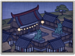
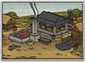
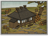
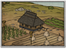

Buildings are used for the recruitment of military units and also subterfuge and religious agents. They also have a range of effects, either on a clan's economy or on the units and agents they produce. See each chain for details of how it can be used.
: +1") Fort
Fort
Castle Chain
The castle is the heart of the population and public order's main controlling factor. Each level of castle building increases the size of its castle town: providing an additional slot on which to build, enabling the recruitment of basic ashigaru units and determining how many units can be recruited there in each turn. Larger castles are more difficult to assault and spawn a larger defence force of samurai retainers and women. They are also the chief consumer of food in a province, so if farm building levels are not in step with castle size there will be food shortages.
 Archery Dojo
Archery Dojo
Archery Chain
All bow-armed units can be recruited from this chain of buildings. Those buildings higher up the chain improve the quality of archers and enable the recruitment of bow heroes. In combination with a temple, it is possible to recruit bow warrior monks from the archery chain. Archers are excellent for skirmishing but poor in melee.

Enables recruitment of Rank 1 monks
Improves the rate at which chi arts are mastered: +3%
Each Buddhist chain building enables you to sustain one additional monk (to a maximum of 5)") Buddhist Temple
Buddhist Temple
Buddhist Chain
This chain of buildings enables the recruitment of both monk agents and, in combination with a yari or bow dojo, warrior monk units. As places of study, Buddhist buildings contribute to your mastery of the arts. Those buildings higher up the chain increase the happiness of the Buddhist population of a province, and can even convert non-Buddhists living there.
 Encampment
Encampment
Improvement Chain
This chain of buildings improves your recruitment and replenishment capabilities, and can be specialised to improve the statistics of specific units.
 Stables
Stables
Cavalry Chain
All cavalry units can be recruited from this chain of buildings. Better cavalry types require the warhorse commodity and corresponding weapon dojos.

Converts the populace to Christianity (+2 religious zeal)
Enables recruitment of Rank 1 missionaries
Improves the rate at which chi arts are mastered: +5%
Each Christian chain building enables you to sustain one additional missionary (to a maximum of 5)") Chapel
Chapel
Christian Chain
This chain of buildings enables the recruitment of missionary agents. The rigidly organised structure of Catholicism enables swifter mastery of the arts and much quicker conversion to their religion than their Buddhist counterparts can manage. The Christian chain promotes a more fluid society with the effect of increased economic growth.
") Market
Market
Market Chain
This chain of buildings enables the recruitment of metsuke agents and is a major contributor to long-term wealth across your empire.

Converts the populace into followers of the Ikko faith (+3 religious zeal)
Enables recruitment of Rank 1 Ikko monks
Improves the rate at which chi arts are mastered: +2%
Each Ikko temple chain building enables you to sustain one additional Ikko monk (to a maximum of 5)") Jodo Shinshu Temple
Jodo Shinshu Temple
Ikko Ikki Chain
This chain of buildings enables the recruitment of both Ikko monk agents and, in combination with a yari dojo, bow dojo, and warhorse stables, both warrior monk infantry and cavalry. As places of study, Ikko Ikki buildings contribute to your mastery of the arts. Those buildings higher up the chain increase the happiness of the Ikko population of a province, can convert non-Ikko members of the population, and even spread the faith to neighbouring provinces.
 Siege Engineer's Workshop
Siege Engineer's Workshop
Siege Chain
This chain of buildings enables the recruitment of matchlock gun-armed units and siege weapons.
") Sake Den
Sake Den
Stealth Chain
This chain of buildings enables the recruitment of ninja agents and also kisho ninja units and also keeps your population happy through the many pleasures they offer. Some of the profits made here are skimmed-off and added to your treasury.
 Sword School
Sword School
Sword Chain
All katana-armed units can be recruited from this chain of buildings. Those buildings higher up the chain improve the quality of the swordsmen and enable the recruitment of katana heroes. All swordsmen are excellent attackers.
 Yari Drill Yard
Yari Drill Yard
Yari Chain
All yari and naginata-armed units can be recruited from this chain of buildings. Those buildings higher up the chain improve the quality of yari and naginata troops and enable the recruitment of heroes. In combination with a temple, it is possible to recruit naginata warrior monks from the yari chain. Pole-armed units such as these are good defenders, especially against cavalry.
 Artisans
Artisans
Craftwork Chain
This chain of province speciality buildings produce the craftwork commodity that can be traded and is required for the construction of certain other buildings. The craftwork chain can also be used to improve the quality of bows, giving a bonus to all bow units recruited in the same province.
 Surface Gold Mine
Surface Gold Mine
Gold Mining Chain
This chain of province speciality buildings improves your clan's income.
 for monks recruited in this province
+1 experience for all bow warrior monk recruits
+1 experience for all naginata warrior monk recruits") Holy Site
Holy Site
Holy Site Chain
This chain of province speciality buildings improves the quality of all monk agents and warrior monk units recruited here, and is therefore of limited use to Christian clans.
- Pastures
Warhorse Chain
This chain of province speciality buildings provides the warhorse commodity required for better cavalry units, also improving all cavalry recruited in the same province.
- School
Intellectual Chain
This chain of province speciality buildings reduces the time required to master arts. The intellectual centre chain can also be used to produce improved metsuke, thereby reducing corruption and increasing income in a province.
 Iron Mine
Iron Mine
Iron Chain
This chain of province speciality buildings produces income and reduces the cost of recruitment in the same province, also providing the iron commodity that can be traded.
") Merchant Colony
Merchant Colony
Naval Chain
This chain of province speciality buildings can be developed to either improve overseas trade income or increase the experience of locally-recruited ship crews.
- Mountain Hideout
Assassin Chain
This chain of province speciality buildings either improves the quality of ninja or monomi agents recruited there and increases income, or increases the experience of kisho ninja units recruited there (not Rise of the Samurai).
- Blacksmith
Smith Chain
This chain of province speciality buildings either improves the armour or melee attack statistics of certain locally-recruited units. The higher the level of building, the greater the number of troop types that can be improved.
- Quarry
Stone Chain
This chain of province speciality buildings reduces the cost of buildings constructed in the same province, also providing the stone commodity required for some high level buildings.
- Lumber Camp
Timber Chain
This chain of province speciality buildings reduces the cost of locally-constructed ships and produces an income, also providing the lumber commodity that can be traded.
- Rice Paddies
Farming Chain
This chain of buildings provides food and is the principle source of income across your entire empire. Farms should be upgraded early in a campaign and often after that.
 Trails
Trails
Infrastructure Chain
This chain of buildings increases the movement speed and rate of replenishment of armies in its province. It also increases the line of sight of your agents and their chances of detecting hidden enemy agents.
 Coastal Village
Coastal Village
Port Chain
This chain of buildings enables the recruitment of ships. Those buildings higher up the chain facilitate overseas trading, increase economic growth, and can allow foreign powers to negotiate the export of their new weapons and ideas to Japan.